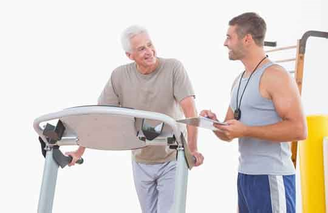

KENDİNİZE BİR İYİLİK YAPIN, HAREKET EDİN
Fiziksel aktivitenin azlığı, yetersizliği veya hiç olmayışı hayatımızın arka planında sağlığımızı olumsuz etkileyen önemli bir risk faktörüdür.
Günün uyku dışında kalan saatlerinde hareket etmek adına sebepler bulmak çok önemli, çünkü düzenli yürüyüş veya fiziksel aktivite yapan bir kişi değilseniz hareketsiz kalmanız kaçınılmaz olacaktır.
Yürümenin hem sağlıklı hem de hasta popülasyonlarda genç, orta ve yaşlı erkek ve kadınlarda KVH ile ilişkili sağlık yararları olduğu görülmektedir.
“Amerikan Kalp Derneği dergisi Stroke'da yayınlanan bir araştırma, günde sekiz saat veya daha fazla hareketsiz zaman geçiren düşük aktivite düzeyine sahip kişilerin, dört saatten daha az fiziksel olarak daha aktif kişilere göre yedi kata kadar daha yüksek inme riskine sahip olduğunu buldu”
“2011'de The Lancet'te yayınlanan bir araştırma, her gün 15 dakikalık hafif egzersizin bile ortalama sekiz yıllık takipte herhangi bir nedenle ölme riskini %14 azaltabileceğini buldu”
Hareket Etmediğinizde Neler Olur Bilmek İster Misiniz?
- Kilo alırsınız (fazla kilo uyku bozukluklarına, eklem rahatsızlıklarına, kas iskelet sistemi rahatsızlıklarına yol açar)
- Kas kaybı ve osteoporoza sebep olabilir.
- Kan dolaşımı olumsuz etkilenir (toplardamarda pıhtı oluşumu kolaylaşır, varisler oluşabilir)
- Hipertansiyon için risk faktörüdür.
- Tip 2 diyabet için risk faktörüdür
- Kalp hastalıkları için risk faktörüdür.
- Kalp krizi için risk faktörüdür.
- İnme için risk faktörüdür.
- Yüksek kolesterol için risk faktörüdür.
- Anksiyete bozuklukları için risk faktörüdür.
- Bağışıklık sisteminde zayıflama için risk faktörüdür.
Hareket Etmenin Sağlığa Faydalarından Bazıları;
- Yürümek, eklemleri - özellikle osteoartrite en duyarlı olan dizleri ve kalçaları - yağlayarak ve onları destekleyen kasları güçlendirerek korur.
- Bağışıklık fonksiyonunu artırır.
- İdeal kilonuzu korumaya yardımcı olur, fazla yağlarınızdan kurtulmanıza yardımcıdır.
- İnsülin direncinizi düşürmenize yardımcı olur
- Ruhsal durumunuzu iyileştirmeye yardımcı olur
- Yürümek kafanı boşaltmana ve yaratıcı düşünmene yardımcı olabilir.
- Kardiyovasküler kondisyonu iyileştirmenize yardımcı olur
- Kalp hastalığı, inme, yüksek tansiyon, kanser ve tip 2 diyabet dahil olmak üzere çeşitli hastalıkların oluşma risklerini azaltır
Yürüyüş Önerileri
Günlük rutininize yürümeye yönelik bazı öneriler şunlardır:
- Asansör yerine merdivenleri kullanın (en azından yolun bir kısmı için).
- Yerel dükkanlara yürüyün (araba sürmeyin).
- Köpeğinizi (veya komşunuzun köpeğini) yürütün.
- İşe gidip gelirken, otobüsten veya trenden bir durak önce inin ve işe gitmek için kalan yolu yürüyün. Arabanızı ofisinizden normalden daha uzağa park edin ve arabanıza yürüyerek gidip gelin.
- Ayak işlerini yaparken araba kullanmak yerine yürümeyi düşünün.
- Görevlerinizi tamamlayabilir ve aynı zamanda egzersiz yapabilirsiniz.
Hareket etmek için bahaneler bulun, yaşamımızı ne kadar hareket etmek üzerine kurarsak olumlu etkilerini sağlığımız üzerinde o kadar çok hissederiz.